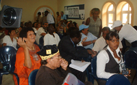
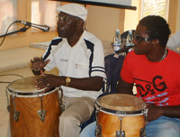

África y Cuba: Un acercamiento cultural (continuación)
Los testimonios y experiencias del profesor e investigador Tomás
Fernández Robaina y el Sr. Edmon Mondesier, director del grupo musical
Belenu, profesor de Filosofía y presidente de la Comisión de Cultura
del Consejo Regional de Martinica, nos revelaron algunos mecanismos de revitalización
y mantenimiento del acervo cultural de África y lo mucho que aún nos
falta por aprender de ese continente.
El Excmo. Sr. Esdras Kamabale Bahekwa, ministro de Cultura de la República
del Congo, apoyó sus reflexiones con una muestra musical interpretada por el
artista congolés Poluku Isse, quien se acompañó de un
instrumento típico del Congo, el Sanza Elekembe. Otro instrumento
representativo, pero de Malí, es la Kora, que fue interpretado por
el artista Massabou Wele Diallo, profesor del Conservatorio de Bamako, muy recordado
por sus compañeros de estudio en el Instituto Superior de Arte de La Habana.
Otras morfologías representativas fueron el Mbira y el Xigovia,
instrumentos musicales de Mozambique, traídos por Luka Mukhavele, etnomusicólogo
y constructor de instrumentos musicales tradicionales.
Mezcla de color, música, poesía y danza volvió a ser el efecto
provocado por la simbiosis de cubanos y africanos en el tercer día de
encuentro del Simposio Cubadisco 2008. Esta vez fueron la génesis,
diversidad, y desarrollo de las culturas africanas, los móviles que reunió
a investigadores de múltiples procedencias.
El Excmo. Sr Mahmoud Thabit Kombo, vice-ministro de Cultura de Zanzíbar, abrió
las ponencias del día haciendo referencia a la pluralidad y progreso cultural
de su pueblo, así como el Excmo. Sr. Oumarou Hadary, ministro de Cultura,
Artes y Comunicaciones de Níger y su consejero técnico Dr. Abdo Lawani
Serki; también estuvo presente el Excmo. Sr. Komoé Augustin Kouadio,
ministro de Cultura de Costa de Marfil y Haroldo Costa, escritor, actor y productor
cultural de Brasil.

De Zanzíbar, país reconocido como el epicentro
cultural de África, el Excmo. Sr. Kombo se refirió a la génesis
de su pueblo a partir de la descripción de su diversidad cultural tanto
religiosa, lingüística, étnica como musical. El ministro afirmó
que la música es un factor trascendental en la unión armónica
de los pueblos, pues a través de ella se pueden sobrepasar todos los obstáculos
e incluso romper las barreras del idioma y creencias religiosas. Asimismo, el Excmo.
Sr. Oumarou Hadary de Níger resaltó la importancia de las artes para
lograr la cohesión social del pueblo y el desarrollo económico. Níger,
antigua colonia de Francia, se encuentra en el corazón de África y su
patrimonio inmaterial y material, heredado de siglos anteriores, es necesario
valorizarlo y protegerlo con el intercambio del trabajo humano, reconstruyendo las
huellas de los vínculos y tradiciones; afirmación que se vio
fortalecida con el deseo común de los ministros presentes de favorecer y
propiciar estos intercambios culturales.
Y si de diversidad se trata, la poesía tuvo en estas sesiones un papel protagónico.
Con acento brasileño “Tú no sabe inglés” de Nicolás
Guillén se escuchó en la voz de Haroldo Costa, escritor, actor y
productor cultural, quien se refirió a los orígenes de la poesía
en la canción afro-brasileña. Tema recurrente en la intervención
del Poeta Nacional de Sudáfrica Keoratse Kgositsile, en esta ocasión
concerniente a los orígenes de la poesía africana.
Con una mirada actualizada y desde diversas perspectivas, los expositores cubanos
lograron ofrecer al auditorio un panorama integral de las expresiones populares
tradicionales originarias de África que aún hoy se mantienen vigentes
en nuestro país. La intervención de la Dra. Virtudes Feliz,
investigadora titular del CENCREM fue el preludio para el resto de los exponentes
del panel integrado por la especialista Loida B. Martínez, CPCC Matanzas,
el MSc. Fidel Pajares Santiesteban, el especialista Gilberto Medina y la musicóloga
Heidy Cepero. La Dra. Bárbara Balbuena, secundada por la Compañía
Isadanza, graficó majestuosamente los toques, bailes y cantos que hicieron de
la tercera sesión una de las más emotivas y diversas.
La transmisión oral de las culturas y la industria musical, fueron los temas
que unieron en un panel multidisciplinario a los exponentes, en su mayoría
cubanos. La Dra. Mirta Fernández, luego de caracterizar la oralidad africana
en Cuba y África, afirmó que los cuentos y proverbios transmitidos a
través de esta práctica, nos permiten caracterizar los pueblos que los
crean. Análisis que desde la contemporaneidad nos presentó la Dra. Lázara
Menéndez. La misión de salvaguardar una cultura milenaria que es
heredada por el descendiente africano, ese ser “que es musical antes de nacer,
musical hasta en los gestos”, la asumieron los investigadores Dolores Agüero,
del Centro Nacional de Derecho de Autor, el investigador Heriberto Feraudy y el
especialista Cecilio Tieles.
Conjuntamente al tema de la oralidad, la industria discográfica fue objeto de
polémicos debates entre el auditorio y los investigadores, donde se propició
la toma de conciencia de un problema que nos afecta profundamente en la actualidad:
la situación del disco en el mercado cubano. La gestión y promoción
musical estuvo en esta ocasión pensada desde heterogéneos enfoques por
el especialista Manuel Domínguez, Gerente de la casa Discográfica Nube
Negra en España; el especialista Johannes Abreu, quien observó la música
desde sus esencias económicas y su atractivo material para la industria
discográfica; mientras la musicóloga Xiomara Pedroso analizó el
disco desde sus valores intrínsecos, para ello se centró en la figura
del intérprete.

Otra problemática que motivó a los especialistas
fue el interés en la conservación y preservación del patrimonio
cultural inmaterial y material, fundamentalmente los instrumentos de origen
africano. Proyectos como el Atlas de los Instrumentos de la Música Folclórico
Popular de Cuba (CIDMUC); la Colección de Instrumentos “Fernando Ortiz”,
del Museo Nacional de la Música; y el Proyecto de Animación de la Ruta
del Esclavo, en Sancti Spíritus, son valiosos logros de las investigaciones,
pues constituyen nuestros archivos testimoniales.
La mujer en la identidad cultural afroamericana fue la temática central en
los trabajos del último día del Simposio Internacional. Investigadores
como Helio Orovio, el Dr. Rogelio Martínez Furé, Ana María Luján,
Gisela Arandia y Leyda Oquendo homenajearon con sus reflexiones a la figura
femenina, que en esta ocasión estuvo personificada por uno de los Premios de
Honor del CUBADISCO 2008, la poetisa e investigadora, Nancy Morejón.
De mujeres se desbordó la sala en las variadas agrupaciones musicales que
fueron invitadas a la gran fiesta, el cuarteto de percusionistas cubanas Obiní
Batá, Elegguá de Venezuela, Vocal Dessandan, de Camagüey y
una figura que aún constituye una de los tesoros de nuestra música
cubana: la rumbera matancera Amalia Aguilar.
Luego de seis días de lecturas de ponencias, conferencias, paneles de debate,
proyecciones de documentales y presentaciones especiales protagonizadas por
investigadores y músicos, hemos profundizado en las interrelaciones que
existen entre nuestros pueblos. Reconectarnos nuevamente con esa África toda,
nos indicó que no solo fue la cultura africana la que influyó en la
creación de la identidad cubana, sino que la exportación de nuestras músicas
tuvo un papel protagónico en esa sociedad. Conocer las raíces,
enriquecer nuestro presente, en pos de un futuro más consolidado, inteligente
y actualizado son premisas que quedaron abiertas para próximos encuentros
interculturales.
|